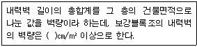
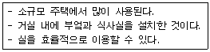
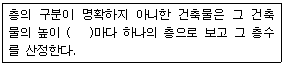
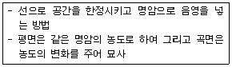

전산응용건축제도기능사 (2012-10-20 기출문제)
1과목: 건축구조
1. 조적조에서 문꼴 상호간 수평거리는 그 벽두께의 몇 배 이상으로 하는가?
- 2
- 3
- 4
- 5
(정답률: 66%)

2. 다음 중 열의 차단으로 더위를 막기 위해 축조된 구조는?
- 방서구조
- 방한구조
- 방충구조
- 방청구조
(정답률: 74%)
3. 철골공사 시 바닥슬래브를 타설하기 전에, 철골보 위에 설치하여 바닥판 등으로 사용하는 절곡된 얇은 판의 부재는?
- 윙플레이트
- 데크플레이트
- 베이스플레이트
- 메탈리스
(정답률: 64%)
4. 다음 ( )안에 적당한 것은?

- 5
- 15
- 25
- 35
(정답률: 87%)
5. 벽돌벽 줄눈에서 상부의 하중을 전 벽면에 균등하게 분포시키도록 하는 줄눈은?
- 빗줄눈
- 막힌줄눈
- 통줄눈
- 오목줄눈
(정답률: 68%)
6. 다음 중 지붕의 빗물을 지상으로 유도하기 위해 설치하는 것은?
- 아스팔트 루핑
- 선홈통
- 기와
- 석면 슬레이트
(정답률: 77%)
7. 철근콘크리트 보에서 압축철근을 사용하는 이유와 가장 거리가 먼 것은?
- 전단내력 증진
- 장기처짐 감소
- 연성거동 증진
- 늑근의 설치용이
(정답률: 34%)
8. 목조 구조물에서 수평력을 주로 분담시키기 위하여 설치하는 부재는?
- 깔도리
- 가새
- 토대
- 기둥
(정답률: 73%)
9. 다음 중 철골조에서 기둥과 기초의 접합부에 사용되는 것이 아닌 것은?
- 베이스 플레이트
- 윙플레이트
- 리브
- 스티프너
(정답률: 56%)
10. 특수 지지 프레임을 두 지점에 세우고 프레임 상부 새들(saddle)을 통해 케이블(cable)을 걸치고 여기서 내린 로프로 도리를 매다는 구조는 무엇인가?
- 현수 구조
- 절판 구조
- 셸 구조
- 트러스 구조
(정답률: 83%)
11. 목조 양식지붕틀의 기둥 상부를 연결하여 지붕틀의 하중을 기둥에 전달하는 부재로 크기는 기둥 단면과 같게 하는 것은?
- 층도리
- 처마도리
- 깔도리
- 토대
(정답률: 46%)
12. 목조 왕대공지붕틀의 구성부재와 관련 없는 것은?
- 빗대공
- 우미랑
- ㅅ자보
- 달대공
(정답률: 77%)
13. 미닫이 창호와 거의 같은 구조이며, 우리나라 전통건축에서 많이 볼 수 있는 창호로 칸막이 기능을 가지고 있는 것은?
- 접이 창호
- 미서기 창호
- 붙박이 창호
- 자재 창호
(정답률: 77%)
14. 다음 중 철근콘크리트구조의 내진벽에 관한 설명으로 옳지 않은 것은?
- 내진벽은 수평 하중에 대하여 저항할 수 있도록 설계된 벽체이다.
- 평면상으로 둘 이상의 교점을 가지도록 배치한다.
- 하중을 벽체가 고르게 부담할 수 있도록 배치한다.
- 내력벽은 상부층에 많이 배치하는 것이 바람직하다.
(정답률: 85%)
15. 구조형식 중 삼각형 뼈대를 하나의 기본형으로 조립하여 각 부재에는 축방향력만 생기도록 한 구조는?
- 트러스 구조
- PC 구조
- 플랫 슬래브 구조
- 조적 구조
(정답률: 82%)
16. 구조의 구성 방식에 의한 분류 중 구조체인 기둥과 보를 부재의 접합에 의해서 축조하는 방법으로 목구조. 철골구조 등을 의미하는 것은?
- 조적식 구조
- 가구식 구조
- 습식 구조
- 건식 구조
(정답률: 71%)
17. 다음 중 동바리 마루의 구성요소가 아닌 것은?
- 인방돌
- 멍에
- 장선
- 동바리돌
(정답률: 61%)
18. 벽돌조 내력벽의 두께는 당해 벽높이의 최소 얼마 이상으로 하여야 하는가?
- 1/12
- 1/15
- 1/18
- 1/20
(정답률: 64%)
19. 철근콘크리트 기둥에 대한 설명 중 옳은 것은?
- 기둥의 주근을 감싸고 있는 철근을 늑근이라 한다.
- 한 건물에서는 기둥의 간격을 다르게 하는 것이 유리하다.
- 기둥의 축방향 주철근의 최소 개수는 직사각형 기둥의 경우 4개이다.
- 기둥의 주근은 단면상 한쪽에만 배치하는 것이 유리하다.
(정답률: 71%)
20. 보를 없애고 바닥판을 두껍게 해서 보의 역할을 겸하도록 한 구조로서, 하중을 직접 기둥에 전달하는 슬래브는?
- 장방향슬래브
- 장성슬래브
- 플랫슬래브
- 워플슬래브
(정답률: 76%)
2과목: 건축재료
21. 포틀랜드시멘트 클링커에 철용광로로부터 나온 슬래그를 급랭한 급랭슬래그를 혼합하여 이에 응결시간 조정용 석고를 혼합하여 분쇄한 것으로 수화열이 적어 매스콘크리트용으로 사용할 수 있는 시멘트는?
- 백색포틀랜드시멘트
- 조강포틀랜드시멘트
- 고로시멘트
- 알루미나시멘트
(정답률: 50%)
22. 다음 중 결로 방지용으로 가장 알맞은 유리는?
- 접합유리
- 강화유리
- 망입유리
- 복층유리
(정답률: 82%)
23. FRP는 어떤 합성수지의 성형품인가?
- 요소수지
- 페놀수지
- 멜라민 수지
- 불포화 폴리에스테르 수지
(정답률: 64%)
24. 목재를 벌목하기에 가장 적당한 계절로 짝지어 진 것은?
- 봄-여름
- 여름-가을
- 가을-겨울
- 겨울-봄
(정답률: 81%)
25. 아스팔트나 피치처럼 가열하면 연화하고, 벤젠·알코올 등의 용제에 녹는 흑갈색의 점성질 반고체 물질로 도로의 포장, 방수재, 방진재로 사용되는 것은?
- 도장재료
- 미장재료
- 역청재료
- 합성수지 재료
(정답률: 41%)
26. 대리석, 사문암, 화강암 등의 쇄석을 종석으로 하여 백색 포틀랜드시멘트에 안료를 섞어 천연석재와 유사하게 성형시킨 것은?
- 점판암
- 석회석
- 인조석
- 화강암
(정답률: 75%)
27. 방청도료에 사용되는 안료로서 부적합한 것은?
- 크롬산아연
- 연단
- 산화철
- 티탄백
(정답률: 44%)
28. 무수석고가 주재료이며 경화한 것은 강도와 표면경도가 큰 재료로서 킨즈 시멘트라고도 불리우는 것은?
- 돌로마이터 플라스터
- 질석 모르타르
- 경석고 플라스터
- 순석고 플라스터
(정답률: 52%)
29. 다음 중 유성 페인트의 특징으로 옳지 않은 것은?
- 주성분은 보일류와 안료이다.
- 광택을 좋게 하기 위하여 바니시를 가하기도 한다.
- 수성페인트에 비해 건조시간이 오래 걸린다.
- 콘크리트에 가장 적합한 도료이다.
(정답률: 59%)
30. 다음 중 콘크리트의 시공연도 시험방법으로 주로 쓰이는 것은?
- 슬럼프시험
- 낙하시험
- 체가름시험
- 표준관입시험
(정답률: 77%)
31. 다음 중 목재의 장점에 해당하는 것은?
- 내화성이 뛰어나다.
- 재질과 강도가 결 방향에 관계없이 일정하다.
- 충격 및 진동을 잘 흡수한다.
- 함수율에 따라 팽창과 수축이 작다.
(정답률: 67%)
32. 변성암의 일종으로 색과 무늬가 아름답고 연마하면 아름다운 광택이 있어 실내장식용 건축재로 많이 사용되는 것은?
- 화강암
- 대리석
- 사암
- 석회암
(정답률: 92%)
33. 청동에 대한 설명으로 옳지 않은 것은?
- 구리와 주석과의 합금이다.
- 황동보다 내식성이 작으며 주조하기 어렵다.
- 청동에 속하는 포금은 약간의 아연, 납을 포함한 구리 합금이다.
- 표면은 특우의 아름다운 청록색으로 되어 있어 장식철물, 공예재료 등에 많이 쓰인다.
(정답률: 57%)
34. 다음 중 여닫이문에 사용되지 않는 창호용 철물은?
- 도어체크
- 플로어힌지
- 자유경첩
- 레일
(정답률: 78%)
35. 목부 바탕에 바탕칠을 한 다음 재벌칠의 흡수를 방지하기 위하여 쓰이는 것은?
- 끝손질 래커
- 래커에나멜
- 우드 실러
- 녹막이 페인트
(정답률: 57%)
36. 다음 중 목재의 심재에 대한 설명으로 옳지 않은 것은?
- 목질부 중 수심 부근에 있는 부분을 말한다.
- 변형이 적고 내구성이 있어 이용가치가 크다.
- 오래된 나무일수록 폭이 넓다.
- 색깔이 엷고 비중이 적다.
(정답률: 77%)
37. 목재의 공극이 전혀 없는 상태의 비중을 무엇이라 하는가?
- 기건 비중
- 절건 비중
- 진 비중
- 겉보기 비중
(정답률: 56%)
38. 다음 중 혼화제인 A.E제에 대한 설명으로 옳은 것은?(오류 신고가 접수된 문제입니다. 반드시 정답과 해설을 확인하시기 바랍니다.)
- 사용 수량을 줄여 블리딩(bleeding)이 감소한다.
- 화학작용에 대한 저항성을 저감시킨다.
- 콘크리트의 압축강도를 증가시킨다.
- 철근의 부착강도를 증가시킨다.
(정답률: 45%)
39. 테라코타는 주로 어떤 목적으로 건축물에 사용 되는가?
- 장식재
- 보온재
- 방수재
- 방진재
(정답률: 84%)
40. 다음 중 물과 화학 반응을 일으켜 경화하는 수경성 재료는?
- 시멘트 모르타르
- 돌로마이트 플라스터
- 회반죽
- 회사벽
(정답률: 63%)
3과목: 건축계획 및 제도
41. 다음 설명에 알맞은 주택의 실구성형식은?

- K 형
- DK 형
- LD 형
- LDK 형
(정답률: 79%)
42. 다음은 건축물의 층수 산정에 관한 설명이다. ( )안에 알맞은 내용은?

- 2m
- 3m
- 4m
- 5m
(정답률: 82%)
43. 건축법령상 공동주택에 속하지 않는 것은?
- 기숙사
- 연립주택
- 다가구주택
- 다세대주택
(정답률: 83%)
44. 실제 길이 3m는 축척 1/30 도면에서 얼마로 나타내는가?
- 1㎝
- 10㎝
- 3㎝
- 30㎝
(정답률: 70%)
45. 다음 중 근린생활권의 주택지의 단위에 속하지 않는 것은?
- 인보구
- 가로 구역
- 근린 분구
- 근린 주구
(정답률: 82%)
46. 부엌 가구의 배치 유형 중 양쪽 벽면에 작업대가 마주 보도록 배치한 것으로 부엌의 폭이 길이에 비해 넓은 부엌의 형태에 적당한 것은?
- -자형
- L자형
- 병렬형
- 아일랜드형
(정답률: 86%)
47. 욕실 바닥의 물을 배수할 때 주로 사용되는 트랩은?
- 드럼트랩
- U트랩
- P트랩
- 벨트랩
(정답률: 51%)
48. 주택의 각 실의 위치를 결정할 때 고려해야 할 사항과 가장 거리가 먼 것은?
- 일조
- 동선
- 시공순서
- 프라이버시
(정답률: 85%)
49. 건축물과 관련된 각종 배경의 표현 방법으로 가장 알맞은 것은?
- 배경을 다양하게 표현한다.
- 표현은 항상 섬세하게 하도록 한다.
- 건물을 이해할 수 있도록 배경을 다소 크게 그린다.
- 건물보다 앞쪽의 배경은 사실적으로 뒤쪽의 배경은 단순하게 표현한다.
(정답률: 72%)
50. 창호의 재질별 기호가 옳지 않은 것은?
- W : 목재
- SS : 강철
- P : 합성수지
- A : 알루미늄
(정답률: 82%)
51. 건축도면의 치수 기입방법에 관한 설명으로 옳은 것은?
- 치수는 특별히 명시하지 않는 한 마무리 치수로 표시한다.
- 치수 기입은 치수선 중앙 아랫부분에 기입하는 것이 원칙이다.
- 치수 기입은 치수선에 평행하게 도면의 오른쪽에서 왼쪽으로, 위로부터 아래로 읽을 수 있도록 기입한다.
- 치수선의 양끝은 화살 또는 점으로 혼용해서 사용할 수 있으며 같은 도면에서 치수선이 작은 것은 점으로 표시한다.
(정답률: 73%)
52. 급기와 배기에 모두 기계 장치를 사용한 환기 방식으로 실내외의 압력차를 조정할 수 있는 것은?
- 중력환기법
- 제1종 환기법
- 제2종 환기법
- 제3종 환기법
(정답률: 75%)
53. 벽돌조에 있어서 1.0B 공간쌓기의 벽두께로 옳은 것은? (단, 벽돌은 표준형을 사용하고, 공간은 75mm로 한다.)
- 180mm
- 255mm
- 265mm
- 285mm
(정답률: 52%)
54. 건물벽 직각 방향에서 건물의 모습을 그린 도면은?
- 평면도
- 배치도
- 입면도
- 단면도
(정답률: 71%)
55. 다음에서 설명하는 묘사방법으로 옳은 것은?

- 단선에 의한 묘사방법
- 명암 처리만으로 방법
- 여러 선에 의한 묘사방법
- 단선과 명암에 의한 묘사방법
(정답률: 75%)
56. 건축설계 진행과정으로 옳은 것은?
- 조건파악 - 기본계획 - 기본설계 - 실시설계
- 조건파악 - 기본설계 - 실시설계 - 기본계획
- 조건파악 - 기본설계 - 기본계획 - 실시설계
- 조건파악 - 기본계획 - 실시설계 - 기본설계
(정답률: 90%)
57. 조명과 관련된 단위의 연결이 옳지 않은 것은?
- 광속: N
- 광도: cd
- 휘도: nt
- 조도: lx
(정답률: 53%)
58. 벽과 같은 고체를 통하여 고체 양쪽의 유체에서 유체로 열이 전해지는 현상은?
- 열복사
- 열대류
- 열관류
- 열전도
(정답률: 46%)
59. 어떤 하나의 색상에서 무채색의 포함량이 가장 적은 색은?
- 명색
- 순색
- 탁색
- 암색
(정답률: 78%)
60. 다음 중 건축법상 “건축” 에 속하지 않는 것은?
- 재축
- 증축
- 이전
- 대수선
(정답률: 80%)